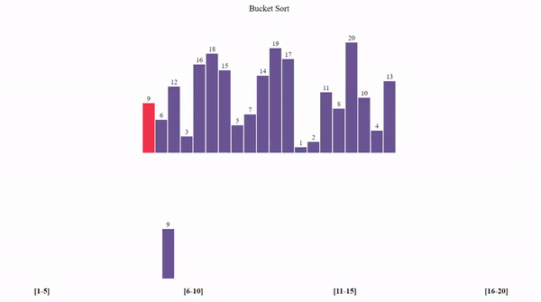

Bucket Sort

Bucket Sort also known as bin sort, is an efficient sorting algorithm that distributes the elements of an array into several buckets. Each bucket is then sorted individually, either using a different sorting algorithm or by recursively applying the bucket sort itself. This method is particularly effective when the input is uniformly distributed over a range.
The basic steps of the bucket sort are as follows:
- Determine Range: First, determine the maximum and minimum values in the array to understand the range of the data.
- Create Buckets: Create a number of buckets. The number of buckets typically depends on the range of the input data and the specific implementation.
- Distribute Elements: Place each element of the array into a bucket based on a rule derived from its value. For example, you might use an interval size to decide which bucket a value belongs to.
- Sort Buckets: Sort each bucket individually. This can be done using any sorting algorithm, but for simplicity, a different simple sorting method like insertion sort is often used.
- Concatenate Buckets: When all buckets are sorted, they can be concatenated into a single array to get the sorted output.
Advantages:
- Efficient for Uniformly Distributed Data:
Bucket sort is most effective when the elements are uniformly distributed. It distributes the elements into multiple buckets and then sorts these smaller arrays, which is much faster than sorting the original array. - O(n) Average Time Complexity:
When the input is uniformly distributed, bucket sort runs in linear time, meaning its average-case complexity is O(n), where n is the number of elements to sort. - Stable Sorting:
Since bucket sort can use stable sorting algorithms to sort individual buckets, it can be a stable sort overall, maintaining the relative order of equal elements.
Disadvantages:
- Dependent on Distribution:
Bucket sort's efficiency heavily relies on the data being uniformly distributed. If the data is clustered, it could lead to an uneven distribution of elements across buckets, which can degrade performance to O(n^2) in the worst case. - Extra Space Required:
The algorithm requires additional memory for the buckets in addition to the original array, so it uses more memory than in-place sorting algorithms like QuickSort. - The overhead of Using Multiple Buckets:
There is an overhead associated with managing multiple buckets and moving elements into and out of them, which can be costly for small datasets.
Code:

CS1102 - Course Project - 2023/2024 Semester B
Tui Pui Yan, XU Siyi, Qi Yufei, Wang Shichao